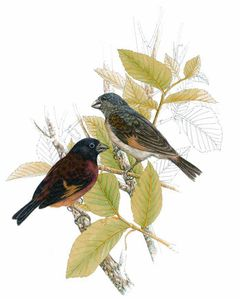
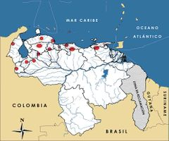

Sporagra cucullata
| Cardenalito | |
|---|---|
|  | |
| Riesgo de extinción | |
En peligro crítico (UICN) | |
| Clasificación científica | |
| Reino: | Animalia |
| Filo: | Chordata |
| Clase: | Aves |
| Orden: | Passeriformes |
| Familia: | Fringillidae |
| Género: | Sporagra |
| Especie: | Sporagra cucullata |
| Nombre binomial | |
|
Sporagra cucullata Swainson, 1820 | |
| Distribución | |
|
 Mapa de distribución de Sporagra cucullata | |
Contenido
Información de Evaluación
- Categoría y Criterio Regional: En Peligro Crítico A4cd
- Fecha de Evaluación Regional: 2015
- Evaluadores: Jesús Morales-Campos y Ariany García-Rawlins
- Categoría y Criterio Global: En Peligro A2d
Justificación
Evaluaciones Previas
1999: En Peligro Crítico (CR)
2008: En Peligro Crítico (CR)
Información General
Nombres comunes
Cardenalito, colorado, jilguero rojo, Red Siskin.
Notas taxonómicas
En 2011, el Comité para la Clasificación en América del Sur de la Unión de Ornitólogos Americanos (SACC del AOU por sus siglas en inglés) votó aceptar una recomendación de denominar la especie Sporagra cucullata, con base en estudios moleculares recientes (Remsen Jr. 2011).
Sinónimos
Carduelis cucullata
Descripción
Ave de aproximadamente diez u once centímetros de longitud. Macho con la cabeza, alas, cola negras, y cuerpo con barras en el ala de color rojo bermellón y el centro del vientre blanco. La hembra solo mantiene el rojo claro en el pecho, en una cinta de ala, y en la rabadilla, mientras el resto de su tronco es grisáceo oscuro arriba y grisáceo claro abajo. En los machos, una línea amarillenta anaranjada alar es visible en vuelo.
Distribución
Se encuentra distribuida sobre todo en Venezuela (Collar et al. 1992). En Colombia hubo una pequeña población presumiblemente de origen natural en las cercanías de Cúcuta (López-Lanús 2000), pero su estatus actual es desconocido. En Puerto Rico, hubo una población introducida, hasta muy cerca de la década de 1970 (Raffaele 1983), pero no existen reportes recientes. En Trinidad y las islas asociadas de Monos y Gasparee fue siempre un ave escasa y se le reporta extinta desde 1960; además, persisten dudas acerca de su origen en estas islas (Ffrench 1973). Se considera que los pocos registros en Cuba son de aves escapadas de cautiverio (Collar et al. 1992), y no hay registros recientes en dicha isla. En el suroeste de Guyana está la población más grande conocida que consta de pocos cientos a pocos miles de individuos, a más de 950 km del límite de la distribución histórica venezolana (Robbins et al. 2003, Clement y Sharpe 2014). Estudios moleculares preliminares son consistentes con un origen natural de la población guyanesa (Rodríguez-Clark et al. 2011). En Venezuela la distribución original se concentró en el norte del país, y de esta solo sobreviven algunos grupos aislados, con énfasis en los estados Zulia, Lara, Falcón, Barinas, Mérida, Guárico, Yaracuy, Aragua y Miranda (Collar et al. 1992, BirdLife International 2015). Su distribución altitudinal se concentra entre 400 a 1400 m. Ocupa varios hábitats, incluyendo bosques húmedos en las cordilleras, bosques deciduos y matorral espinoso en las zonas áridas e intervenidas cercanas, aunque mantiene preferencias por bosques abiertos, más o menos secos y a altitudes intermedias (Collar et al. 1992, Clement y Sharpe 2014).
- Sistema: Terrestre
- Bioregión:
- Intervalo altitudinal (m): 400-1400
- Endémica: Sí
Situación
En la actualidad Sporagra cucullata está entre las aves más amenazadas de Venezuela (Rodríguez, J. P. et al. 2004b). Desde 1952, la IUCN la reporta como amenazada en las listas rojas, estimándose que la mayoría de sus poblaciones están extintas y su distribución actual no llega a 20% de lo que fue la original (Rojas-Suárez et al. 2008). En el ámbito internacional la especie está clasificada En Peligro (BirdLife International 2015). Cálculos poco sistemáticos acerca del tamaño poblacional en nuestro país, basados en datos de la década de 1980, sugieren un total de entre varios cientos y pocos miles, de los cuales casi la mitad se encontró en occidente, la otra mitad en la zona central, y extinta al este. Estudios más optimistas en ese momento calcularon 6000 individuos silvestres (Rivero Mendoza 1986, Coats y Phelps 1985, Collar et al. 1992, Patterson 1994, Rivero Mendoza 2004, Rojas-Suárez et al. 2008). Sin embargo, no hay estudios precisos sobre la situación actual de la especie. Se puede asegurar que para la década de 1980 ya era mucho menos abundante que históricamente (Coats y Phelps 1985). De igual forma, es posible inferir que el número de individuos ha caído aún más desde ese momento, por la dificultad hoy en día de observarlos en los lugares en que persistía hasta 1980 (J. Miranda, D. Ascanio y C. J. Sharpe obs. pers.). Sin embargo, Sporagra cucullata puede ser difícil de detectar aun para observadores experimentados, y llega a ser más arisca en zonas donde hay cacería activa. Un leve aumento en los avistamientos en la última década es probable que se deba más a la perseverancia de los observadores, que a un alza real en la población o una expansión de la distribución.
- EOO (km2): Temporalmente sin información
- AOO (km2): Temporalmente sin información
- Tendencia Poblacional: Desconocida
Amenazas
La principal amenaza es su captura y comercio para el mercado ilegal de mascotas, práctica realizada de modo persistente desde el siglo XIX, cuando también, y hasta principios del siglo siguiente, su plumaje se utilizó como adorno para sombreros (Birkhead 2003). En la actualidad su mercado está relacionado con dos usos, uno como mascota y el otro para la hibridación con canarios y otras especies relacionadas. Presenta una gran demanda en el ámbito internacional legal e ilegal, aunque a escala nacional no es traficada abiertamente en abundancia como otras especies, sino de manera más furtiva, incluso a través de Internet (Asmussen 2009). Si bien S. cucullata parece tolerar hábitats intervenidos, lo hace siempre en zonas contiguas a hábitats naturales. Por lo anterior, la disminución en los bosques secos y bosques caducifolios en el norte del país podría representar una amenaza adicional (Rodríguez, J. P. et al. 2010).
Conservación
Internacionalmente está incluida en el Apéndice I de la Convención sobre el comercio internacional de especies amenazadas de fauna y flora silvestres (Cites 2014) bajo su nombre anterior Carduelis cucullata, en el Endangered Species Act de los Estados Unidos y su importación en Europa en aparariencia ha disminuido debido a las vedas implementadas en la importación de aves desde fines de 2000, para frenar la transmisión de enfermedades (The Commission of the European Communities 2007). En Australia su importación ha sido restringida desde fines de los noventa por razones similares (Gobierno de Australia 1999). En Venezuela la situación de amenaza es denunciada desde 1940 (Coats y Phelps 1985). Posteriormente se estableció su protección, una veda indefinida en su caza y su estatus oficial como Especie en Peligro de Extinción (Venezuela 1982, Venezuela 1996a, Venezuela 1996b). En el estado de Lara, donde es ave emblemática, cuenta con un programa de conservación oficial, liderizado por el parque zoológico y botánico Bararida (Gobernación del Estado Lara 2005). Las pocas poblaciones silvestres conocidas en Venezuela se encuentran tanto en áreas protegidas como en propiedades privadas (Lentino et al. 2005), y varias zonas protegidas han sido identificadas como clave para su conservación (Oficina Nacional de Diversidad Biológica 2013). Aunque fue objeto de varios esfuerzos conservacionistas locales, regionales, nacionales e internacionales, tanto de instituciones privadas como gubernamentales, no se ha logrado detener la disminución de sus poblaciones. Es probable que la falta de continuidad en dichos esfuerzos sea factor importante en su falta de éxito (Rojas-Suárez et al. 2008). La cría en cautiverio del cardenalito es factible y su estímulo podría ser una alternativa para satisfacer la demanda comercial, sin embargo, no existe un modelo que permita inferir que la producción comercial en condiciones presentes mejorará el estatus de las poblaciones silvestres. Se recomienda desarrollar un programa de cría en cautiverio en Venezuela con fines conservacionistas (Fessl et al. 2010, K. M. Rodríguez-Clark obs. pers.) y manejada de acuerdo con criterios genéticos y demográficos (K. M. Rodríguez-Clark obs. pers.) para su reintroducción eventual. Esta se considera factible, pero existen riesgos múltiples: enfermedades que impidieron un esfuerzo de este tipo en Trinidad (J. Clinton-Etniear com. pers.), la facilidad con la que se hibridiza, la posibilidad de ascendencia mixta con otras especies (McCarthy 2006) y, sobre todo, la persistente presión de cacería. Es urgente impulsar esfuerzos interinstitucionales, ya que las acciones dispersas e individuales pueden agravar la situación. Se recomienda investigar su ecología, genética, distribución actual y requerimientos de hábitat, junto con su presión de captura, para desarrollar campañas de educación ambiental y fiscalización debidamente concebidas, en conjunto con esfuerzos de reintroducción.
Autorías
Autores originales
Kathryn M. Rodríguez-Clark, Christopher J. Sharpe, Franklin Rojas-Suárez, Jhonathan Miranda, David Ascanio, Miguel Lentino y Michael J. Braun
Colaboradores
Ilustrador
Mercedes Madriz
Referencias
- Asmussen, M. A. Estimación del comercio ilegal de fauna silvestre a tres escalas espacio-temporales: Global, regional y nacional. Maestria thesis, Instituto Venezolano de Investigaciones Cientificas, (2009).
- Birkhead, T. The Red Canary. (Weidenfeld & Nicolson, 2003).
- BirdLife International (2012), en IUCN Red List of Threatened Species. Version 2013.1. [www.iucnredlist.org www.iucnredlist.org] .
- Carrascal, L. M. et al. Cambio demográfico del pinón azul entre 2002-2011. 5 (Museo Nacional de Ciencias Naturales, Consejo Superior de Investigaciones Cientificas, Ministerio de Ciencia e Innovacion de las Islas Canarias, Gran Canaria, Islas Canarias, 2011).
- CITES. Appendices I, II y III (vaido para el 12 de junio de 2013), www.cites.org/eng/app/index.php (2013).
- Coats, S. & Phelps, W. H. The Venezuelan red siskin: case history of an endangered species. Ornithological Monographs 36, 977-985 (1985).
- Collar, N. J. in Threatened Birds of the Americas: The ICBP/IUCN Red Data Book (eds Nigel J. Collar et al.) 986-994 (International Council for Bird Preservation, 1992).
- Comisión de las Comunidades Europeas. Commission Regulation (EC) No 318/2007 of 23 March 2007 laying down animal health conditions for imports of certain birds into the Community and the quarantine conditions thereof. Official Journal of the European Union 84, 7-27 (2007).
- Fessl, B. et al. Taller Internacional sobre manejo del Pinzón del Manglar (Cactospiza heliobates), 17-21 de noviembre de 2008., 144 (Conservation Breeding Specialist Group, IUCN, Puerto Villamil, Isabela, Galápagos, Ecuador, 2010).
- Ffrench, R. A guide to the birds of Trinidad and Tobago. (Livingston Publishing Company, 1973).
- Gill, F. & Donsker, D.(2013).
- Gobernación del Estado Lara. in Gaceta Ordinaria del Estado Lara, Venezuela, Gaceta No 5329 2 (2005).
- Gobierno de Australia. Evironmental Protection and Biodiversity Conservation Act. 1era ed. . (Australia: Australian Government Department of Environment, Water, Heritage and the Arts., 1999).
- Hilty, S. L. Birds of Venezuela (second edition). (Princeton University Press, 2003).
- Hilty, S. L. & Brown, W. L. A guide to the birds of Colombia. (Princeton University Press, 1986).
- Lentino, M., Esclasans, D. & Medina, F. in Áreas Importantes para la Conservación de las aves en los Andes Tropicales: Sitios Prioritarios para la Conservación de la Biodiversidad (ed Bird Life Internacional y Conservation Internacional) 621-730 (BirdLife Internacional, 2005).
- López-Lanús, B. Carduelis cucullata aún sobrevive en Colombia. Boletín de la Sociedad Antioqueña Ornitología 11, 89-91 (2000).
- McCarthy, E. M. Handbook of Avian Hybrids of the World. (Oxford University Press, 2006).
- Oficina Nacional de Diversidad Biologica. Cardenalito (Carduelis cucullata). Sistema Venezolano de Información sobre la Diversidad Biologica. diversidadbiologica.minamb.gob.ve/especies/ficha/7/15349/ [revisado en Octubre de 2013]. (Ministerios del Poder Popular para el Ambiente y para Ciencia, Tecnología e Innovación, 2013).
- Patterson, Y. The red siskin's future. Bird Talk Magazine 12, 60-62 (1994).
- Phelps, W. H. & Meyer de Schauensee, R. Una guía de las Aves de Venezuela. (Gráficas Armitano, 1979).
- Raffaele, H. A. The raising of a ghost--SPINUS CUCULLATUS in Puerto Rico. Auk 100, 737-739 (1983).
- Remsen, J. V., Jr. in A classification of the bird species of South America, version 2013 (eds J. V. Remsen, Jr. et al.)(American Ornithologists' Union, 2011).
- Rivero Mendoza, A. El Cardenalito (Carduelis cucullata): Ecología y comportamiento en la Región Centro Occidental Barquisimeto-Venezuela, segunda edicion. (Vicerrectorado de Investigación y Postgrado Universidad Pedagogica Experimental Libertador, 2004).
- Rivero Mendoza, A. El cardenalito un venezolano que se extingue. Natura 78, 16-21 (1986).
- Robbins, M. B., Braun, M. J. & Finch, D. W. Discovery of a population of the endangered red siskin (Carduelis cucullata) in Guyana. The Auk 120, 291-298 (2003).
- Rodríguez-Clark, K. M. et al. Using genetics to understand and conserve the Red Siskin (Carduelis cucullata). Journal of the National Finch and Softbill Society 28, 25-30 (2011).
- Rodríguez-Clark, K. M. & Sánchez-Mercado, A. Population management of threatened taxa in captivity within their natural ranges: Lessons from Andean bears (Tremarctos ornatus) in Venezuela. Biological Conservation 129, 134-148 (2006).
- Rodríguez, J. P. y Rojas-Suárez, F. (1999). Libro Rojo de la Fauna Venezolana, segunda edición. PROVITA, Fundación Polar. Caracas. 444 pp.
- Rodríguez, J. P. y Rojas-Suárez, F. (Eds.) (2008). Libro Rojo de la Fauna Venezolana, tercera edición. Provita y Shell Venezuela, S. A. Caracas, Venezuela. 364 pp.
- Rodríguez, J.P. & F. Rojas-Suárez (eds.) 2008. Libro Rojo de la Fauna Venezolana. Tercera Edición. Provita & Shell Venezuela, Caracas, Venezuela. 359 pp.
- Rodríguez, J. P., Rojas-Suárez, F. & Giraldo Hernández, D. 324 (Provita, Shell Venezuela, Lenovo (Venezuela), Caracas, 2010).
- Rodríguez, J. P., Rojas-Suárez, F. & Sharpe, C. J. Setting priorities for the conservation of Venezuela's threatened birds. Oryx 38, 373-382, doi:10.1017/s0030605304000730 (2004).
- Rojas-Suárez F., Sharpe C.J., & D. González-Zubillaga. 2008. Cardenalito, 'Carduelis cucullata. pp: 147. En: J.P. Rodríguez & F. Rojas-Suárez (eds.) Libro Rojo de la Fauna Venezolana. Tercera Edición. Provita & Shell Venezuela, Caracas, Venezuela.
- Swainson, W. in Zoological Illustrations, Volume I (ed William Swainson) Pl. 7 (R. and A. Taylor, Shoe-Lane, for Baldwin, Cradock, and Joy, Paternoster-Row; and W. Wood, Strand, 1820).
- USFWS. in U.S. Fish & Wildlife Service Environmental Conservation Online System: Threatened & Endangered Species (2013).
- Venezuela, R. d. en Gaceta oficial Nº 32.619 (Ministerio del Ambiente y de los Recursos Naturales Renovables, 1982).
- Venezuela, R. d. en Gaceta oficial Nº 36.059 (Ministerio del Ambiente y de los Recursos Naturales Renovables, 1996).
- Venezuela, R. d. en Gaceta oficial Nº 36.062 (Ministerio del Ambiente y de los Recursos Naturales Renovables, 1996).